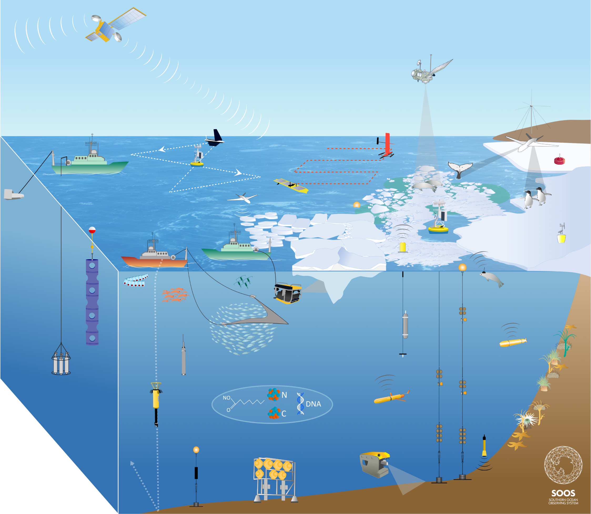

海洋モニタリングにおける国際協力の重要性
南極海は、地球気候システムにおいて極めて重要な役割を果たし、ペンギンや海鳥やクジラといった南極圏の豊かな生態系を支えています。しかし、その重要性に反するように、南極域の極めて広大で過酷な環境は、海洋データの収集を非常に困難にしています。また、南極域は南極条約によって領土権の主張が凍結されており、30ほどの国々がサイエンスを目的とした観測基地を建設しています。したがって、南極海モニタリングにおいて国際協力は不可欠なものです。
国際委員会である南極海観測システム（SOOS）は、各国の研究機関が観測資源を機動的に展開できるよう、研究者同士の情報交換を促すとともに、観測データや測定技術を共有することで、国際的な観測体制を最適化することを目指しています。こうした取り組みは、より正確な将来気候予測といった社会的な要請に資するものです。

効率的な海洋モニタリングのための自動化技術 ー Argoフロートとグライダー
海洋モニタリングにおいて、自動化技術が近年ますます重要性を増しています。氷海においても、プロファイリングフロートやグライダーなどの自律型計測機器が使用され、その効率的かつ費用対効果の高い海洋観測能力が実証されています。
プロファイリングフロート（Argoフロート）は、海流に漂流しながら定期的に設定された深度まで沈み、水温、塩分、その他の水塊特性の計測を行います。これらのデータは衛星を通じてリアルタイムで研究者に送信され、海洋の物理・化学的特性をモニタリングすることができます。
一方、グライダーはプログラムされた特定の経路を潜航しながら移動・観測する、自律型の水中ロボットです。浮力の変化を利用して水中を上下に移動しながら、固定翼を使って方向を調節し、水温、塩分、その他の特性のデータを収集します。プロファイリングフロート同様、グライダーもリアルタイムで研究者にデータを送信します。

氷海においては、自律型計測機器の使用が特に有効です。氷海の過酷な環境と港から離れた場所であることから、従来の船舶観測でのデータ収集は困難でコストがかかります。特に冬の南極海は、砕氷船でも到達することがほぼ不可能です。自律型計測機器は、氷海でも数ヶ月以上の長期間にわたって動作することができるため、広範囲にわたる海洋の連続的なモニタリングが可能です。
氷海における自律型測器の大きな利点の一つは、従来の船による測定が困難な領域で、海洋構造に関する詳細な情報を取得できる点です（例えば、棚氷の下など）。